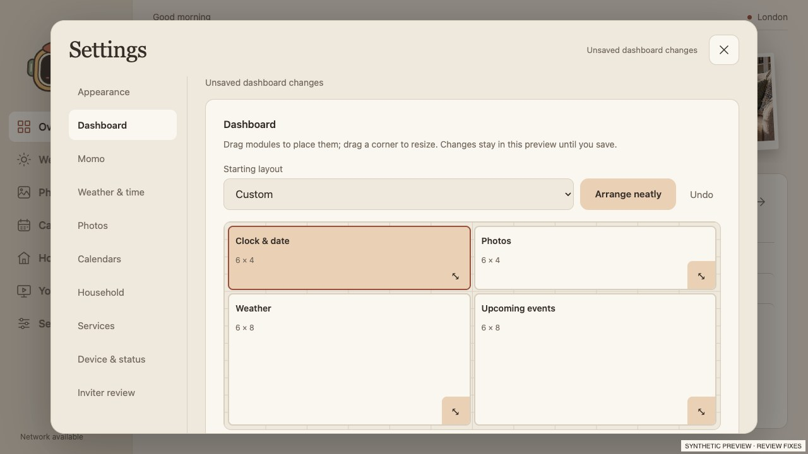
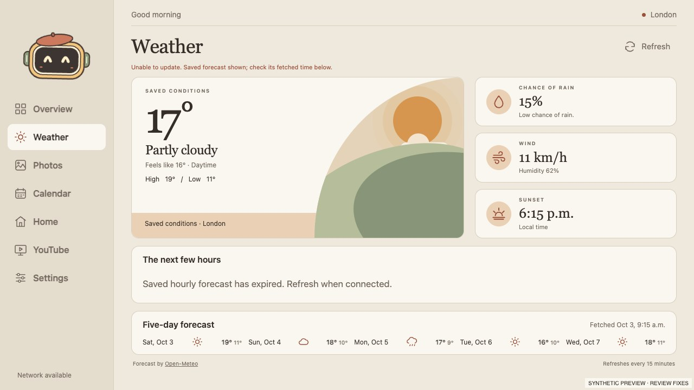
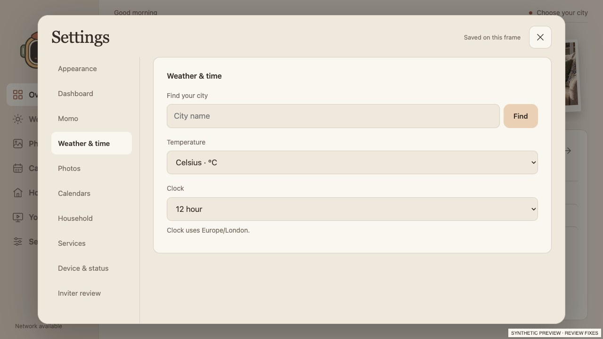
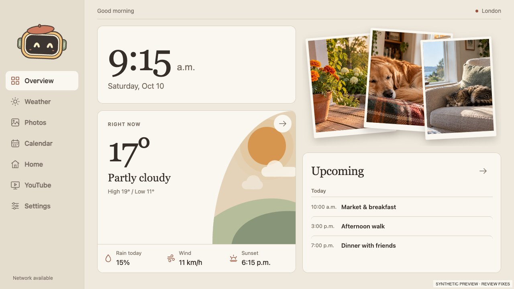
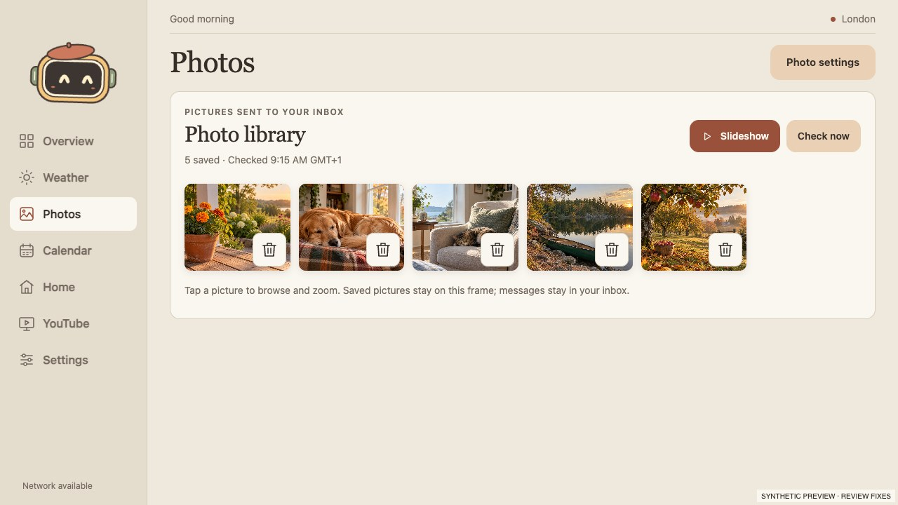
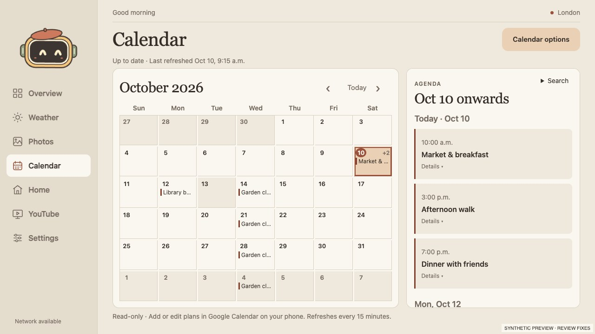

Staged dashboard changes


Two frame responsiveness/privacy-control issues and seven correctness, reliability and release-check issues are fixed. Existing layouts and the four clock designs are retained.
| Level | Finding | Result | Verification |
|---|---|---|---|
| P1 | Photo cache blocked frame input | Network reads, decoding, rotation, JPEG encoding and temporary-file writes now run outside the cache lock. A short publication lock preserves deduplication and exclusion rules. | Blocked-stream Android test: cache reads remain responsive. |
| P1 | Disconnect and erase blocked during mail checks | Both cancel the active TLS sockets immediately. Every check has a 120-second total deadline. Generation and cancellation fences prevent late cache repopulation or stale success updates. | Actual PhotoMail/PhotoStore erase and disconnect tested with synthetic stalled work on the frame. |
| P2 | Malformed email stopped later imports | Invalid base64 and malformed MIME parts are skipped independently, within depth/part/image bounds. Connection failures still fail the check. | Serialized malformed MIME/base64 plus valid sibling/message tests; network-failure propagation test. |
| P2 | One-photo slideshow never advanced after refresh | A refreshed open playlist reschedules playback when a second photo arrives. Pause is preserved; one-photo lists stop the timer and empty lists close. | Browser test exercises one → two → paused → one → zero. |
| P2 | Obsolete calendar renders kept creating workers | A new render terminates and rejects prior workers immediately. Revision checks surround every month and Overview parse. | Three-feed supersession and removal races covered by Node tests. |
| P2 | Expired forecast labelled old data Now/Today | Hourly rows use actual timestamps and show an expired message when no upcoming data remains. Daily dates use the chosen city timezone; saved conditions and fetched dates remain explicit. | Cached offline forecast seven days old visually inspected and tested. |
| P2 | Malformed saved city prevented startup | Settings load through a small validation helper that recovers malformed city/scalar values and invalid timezones without losing usable valid fields. | Node invalid-JSON-shape coverage and rendered city:null recovery. |
| P2 | History privacy check warned but passed | Personal email in author/committer metadata now causes a nonzero exit without printing the address. | Exit-status regression and clean-history pass covered in Python. |
| P2 | Dashboard draft falsely said Saved | Dashboard inputs bypass the generic auto-save message. Editor/header feedback reflects staged changes until Save, including after reopening. | Clock/preset, Save/Discard/reopen browser tests and actual-frame draft/discard check. |
Browser harnesses now wait for DOM readiness and explicit app initialization. Calendar worker cancellation can leave network-idle waits pending even when the app is ready; the final runs needed no startup retries.
All screenshots below come from the isolated synthetic preview. Actual-frame photos, calendars, account details and acceptance captures remain private. Stalled import/cancellation tests use isolated synthetic data; they do not establish long-term unattended mail reliability.





